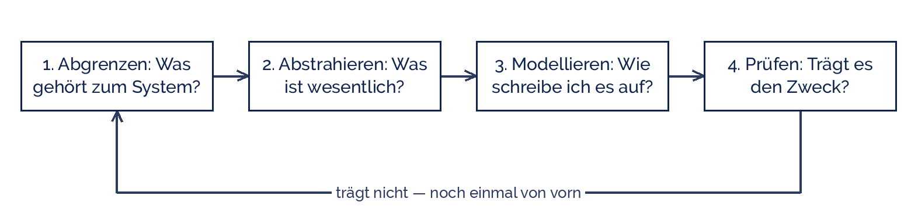

Good morning!
Nur das Schöne wird die Welt retten!
Fjodor Dostojewski
Nicht verzagen, Doc Alvers fragen!
Informatik — Grundkurs 12
Vier Schritte, drei Eigenschaften — und warum jedes Modell etwas weglässt
Nicht verzagen, Doc Alvers fragen!
Kapitel 01
Die Wirklichkeit passt in keinen Rechner
Nicht verzagen, Doc Alvers fragen!
Kein System der Welt lässt sich vollständig beschreiben — es gibt immer ein Detail mehr
Ein Modell ist der handliche Ersatz: klein genug zum Denken, genau genug zum Arbeiten
Modellieren heißt deshalb vor allem: entscheiden, was wegfällt
Und jede dieser Entscheidungen hat einen Grund — nämlich den Zweck des Modells
Wer den Zweck nicht kennt, kann ein Modell weder bauen noch beurteilen
Nicht verzagen, Doc Alvers fragen!
| Modell | lässt weg | behält | Zweck |
|---|---|---|---|
| Stadtplan | Häuserhöhe, Farbe, Menschen | Straßen, Namen, Lage | sich zurechtfinden |
| Klassenliste | Aussehen, Charakter, Hobbys | Name, Klasse, Geburtsdatum | verwalten |
| Wettermodell | jede einzelne Wolke | Druck, Temperatur im Raster | vorhersagen |
| Flugsimulator | Absturzgefahr | Steuerverhalten, Instrumente | gefahrlos üben |
Alle vier lassen mehr weg, als sie behalten — und sind genau deshalb brauchbar
Dasselbe Original trägt viele Modelle: eine Stadt als Plan, als Netz, als Datenbank
Nicht verzagen, Doc Alvers fragen!
Kapitel 02
Abgrenzen, abstrahieren, modellieren, prüfen
Nicht verzagen, Doc Alvers fragen!

Der letzte Schritt führt zurück: Modellbildung ist ein Kreislauf, keine Einbahnstraße
Geprüft wird gegen den Zweck, nicht gegen die Wirklichkeit — die verliert immer
Nicht verzagen, Doc Alvers fragen!
| Schritt | Leitfrage | Ergebnis | typischer Fehler |
|---|---|---|---|
| Abgrenzen | Was gehört dazu? | Systemgrenze, Zweck | alles hineinnehmen |
| Abstrahieren | Was ist wesentlich? | Liste der Merkmale | Details retten wollen |
| Modellieren | Wie schreibe ich es auf? | Diagramm, Schema, Code | gleich programmieren |
| Prüfen | Trägt es den Zweck? | Freigabe oder Rücksprung | gar nicht prüfen |
Die Reihenfolge ist kein Ritual: wer abstrahiert, bevor er abgegrenzt hat, lässt das Falsche weg
Nicht verzagen, Doc Alvers fragen!
Zwei Fragen, schriftlich beantwortet: Wozu brauche ich das Modell, und für wen?
Dann eine Linie ziehen: was ist drinnen, was ist draußen, was ist die Schnittstelle?
Beispiel Mensa: die Bestellung ist drinnen, die Buchhaltung der Stadt ist draußen
Draußen heißt nicht unwichtig — es heißt nicht Gegenstand dieses Modells
Ohne Grenze wächst jedes Modell, bis es so unhandlich ist wie die Wirklichkeit
Nicht verzagen, Doc Alvers fragen!
Abstrahieren heißt: vom Einzelnen wegsehen und das Gemeinsame benennen
Aus „Anna, Ben, Chiara“ wird die Klasse Schüler mit den Merkmalen Name und Nummer
Die Probe: Fehlt dem Zweck etwas? Nur dann darf ein Merkmal zurück ins Modell
Ein Merkmal, das niemand je auswertet, ist Ballast — es kostet Pflege und Vertrauen
Weglassen ist eine fachliche Entscheidung und gehört deshalb dokumentiert
Nicht verzagen, Doc Alvers fragen!
Kapitel 03
Woran man ein Modell überhaupt erkennt
Nicht verzagen, Doc Alvers fragen!
| Eigenschaft | besagt | am Stadtplan |
|---|---|---|
| Abbildung | Es gibt ein Original, das abgebildet wird | die echte Stadt |
| Verkürzung | Nicht alle Merkmale des Originals kommen mit | keine Häuserfarben |
| Pragmatik | Für wen, wozu und wann es gilt | für Fußgänger, heute |
Die drei Merkmale stammen aus Herbert Stachowiaks Allgemeiner Modelltheorie (1973)
Sie sind ein Prüfraster: fehlt eines, redet man nicht über ein Modell
Pragmatik ist das am häufigsten vergessene — und das, an dem Modelle scheitern
Nicht verzagen, Doc Alvers fragen!
Für wen? Ein Netzplan für Fahrgäste ist kein Netzplan für Gleisbauer
Wozu? Ein Modell zum Vorhersagen darf anderes weglassen als eines zum Erklären
Wann? Modelle veralten: Straßen ändern sich, Lehrpläne auch
Deshalb gehört zu jedem Modell ein Satz, der Zweck, Adressat und Stand nennt
Fehlt dieser Satz, streiten später zwei Leute über ein Modell, das jeder anders liest
Nicht verzagen, Doc Alvers fragen!
Kapitel 04
Die Ausleihe in der Schulbibliothek
Nicht verzagen, Doc Alvers fragen!
| Schritt | so haben wir entschieden |
|---|---|
| Abgrenzen | Zweck: wissen, wer welches Buch hat. Drinnen: Buch, Schüler, Ausleihe. Draußen: Einkauf, Mahngebühren, Regalordnung |
| Abstrahieren | Buch: Signatur, Titel, Autor. Schüler: Nummer, Name, Klasse. Ausleihe: wer, was, ab wann, bis wann |
| Modellieren | drei Kästen mit ihren Merkmalen, dazwischen die Beziehung „leiht aus“ als Tabelle mit Datum |
| Prüfen | Testfrage: Wer hat gerade Signatur B-114? Wer hat überzogen? Beides beantwortbar — das Modell trägt |
Nichts davon ist Programmieren — hier fällt noch keine Zeile Code
Erst wenn diese vier Zeilen stehen, lohnt sich der Rechner. Vorher rät man nur
Draußen heißt: kommt vielleicht später, aber nicht in dieses Modell
Nicht verzagen, Doc Alvers fragen!
Zustand des Buchs — für die Frage „wer hat es?“ ohne Belang
Telefonnummern — hätte Folgen für den Datenschutz und keinen Nutzen für den Zweck
Wie oft ein Buch schon gelesen wurde — interessant, aber ein anderer Zweck, ein anderes Modell
Jede Streichung mit einem Satz begründet: das ist die Dokumentation der Abstraktion
Ändert sich der Zweck, ändert sich das Modell — nicht umgekehrt
Nicht verzagen, Doc Alvers fragen!
Ein Modell ist nie die Wirklichkeit, sondern eine Verkürzung für einen Zweck. Wer den Zweck nicht kennt, kann das Modell nicht beurteilen.
Merksatz
Nicht verzagen, Doc Alvers fragen!
Herbert Stachowiak schrieb 1973 die drei Merkmale auf, die bis heute jede Definition trägt
Harry Beck zeichnete 1933 den Londoner U-Bahn-Plan geografisch falsch — und dafür lesbar
George Box, Statistiker: „Alle Modelle sind falsch, aber manche sind nützlich“ (1976)
Das Wettermodell ICON-D2 des Deutschen Wetterdienstes rechnet in Kacheln von rund 2 km — eine einzelne Gewitterzelle ist kleiner als ein Kästchen
Die Mercator-Karte macht Grönland so groß wie Afrika. Sie ist trotzdem richtig — für ihren Zweck: Kurse als gerade Linien
Nicht verzagen, Doc Alvers fragen!
Zu zweit eine Miniwelt wählen: Mensa, Vertretungsplan oder Sporttag-Anmeldung
Abgrenzen: Zweck und Adressat in einem Satz, dann drinnen, draußen und Schnittstelle
Abstrahieren: je Gegenstand höchstens fünf Merkmale — zu jedem gestrichenen ein Grund
Modellieren: Kästen mit Merkmalen, Beziehungen beschriften. Papier reicht
Prüfen: zwei Testfragen beantworten und die drei Eigenschaften am eigenen Modell nachweisen
Nicht verzagen, Doc Alvers fragen!